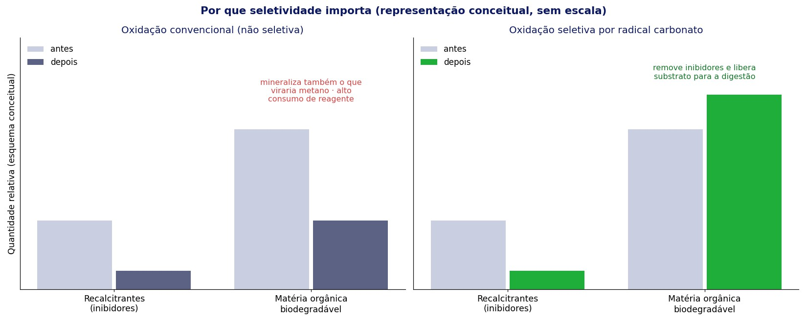
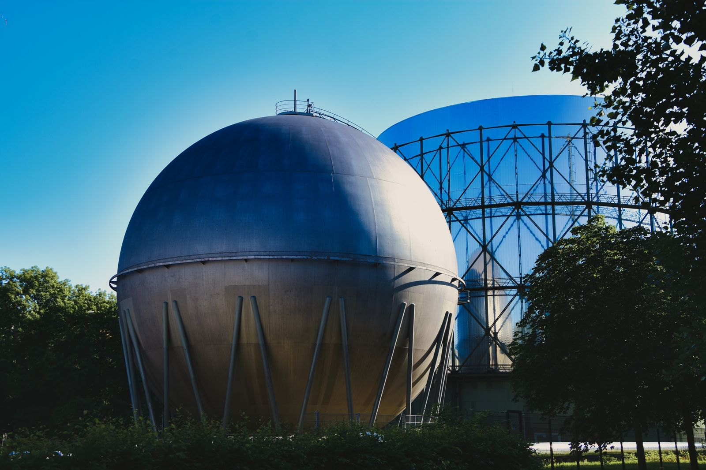

Problema / desafio do cliente
A vinhaça, subproduto da destilação do etanol de cana-de-açúcar, é gerada em grandes volumes e tem alta carga orgânica. Por isso, é usada na fertirrigação e, cada vez mais, na produção de biogás e biometano. Mas a biodigestão da vinhaça rende menos do que poderia.
O calor da destilação provoca reações de Maillard que formam melanoidinas: polímeros escuros e recalcitrantes que inibem as enzimas dos microrganismos e reduzem a produção de metano. Estruturas lignocelulósicas de difícil hidrólise agravam o problema.
Contexto e características do processo
- Setor sucroenergético: cada litro de etanol gera vários litros de vinhaça.
- As tecnologias de pré-tratamento existentes (ozônio, persulfato, peróxido de hidrogênio, sistemas com membranas) usam oxidação não seletiva: consomem muito reagente e oxidam também a matéria orgânica que viraria metano.

Diagnóstico e dados analisados
- As melanoidinas e os compostos heterocíclicos atuam como inibidores da digestão anaeróbia e reduzem o potencial bioquímico de metano (PBM).
- A oxidação convencional, voltada à mineralização total, não distingue inibidores de substrato útil.
- Havia espaço para uma rota que atacasse seletivamente os compostos recalcitrantes, sem desperdiçar o substrato que vira metano.
Metodologia utilizada
- Revisão do estado da técnica, incluindo patentes de pré-tratamento por ozônio, oxidação combinada e sistemas integrados de digestão e membranas.
- Concepção da rota: um agente oxidativo gasoso desenvolvido pela GETA, gerado in situ por descarga por barreira dielétrica (DBD) em reatores de óxido de zircônio, que dá origem a espécies reativas de carbono.
- Mecanismo: os radicais carbonato (CO₃•⁻) são eletrófilos seletivos, com alta afinidade por anéis aromáticos e heterocíclicos ricos em elétrons, como os das melanoidinas e da lignina.
- Integração ao processo: o pré-tratamento é posicionado antes do biodigestor, condicionando o substrato sem mineralizá-lo.
- Proteção: redação da patente de invenção do método e do sistema.
Solução de engenharia desenvolvida
A invenção é um método de pré-tratamento da vinhaça que usa um agente oxidativo gasoso desenvolvido pela GETA para gerar radicais carbonato em contato com a vinhaça, antes da biodigestão. O resultado é uma oxidação seletiva, que:
- despolimeriza estruturas lignocelulósicas, tornando-as mais suscetíveis à hidrólise enzimática;
- degrada melanoidinas e produtos das reações de Maillard, reduzindo a inibição dos microrganismos;
- preserva a matéria orgânica que será convertida em metano, ao contrário da oxidação convencional.
No plasma, o agente gasoso forma oxocarbonos excitados (COₓ•). Em contato com a vinhaça, eles dão origem a espécies reativas de carbono, como os radicais bicarbonato e carbonato (CO₃•⁻); a reação entre radicais hidroxila e íons bicarbonato também gera o radical carbonato:


Tecnologias e processos envolvidos
- Plasma não térmico para gerar o agente oxidativo gasoso e as espécies reativas de carbono.
- Química de radicais carbonato: oxidação seletiva por transferência de átomo de hidrogênio e de elétrons.
- Digestão anaeróbia e produção de biometano.
- Dois ou mais reatores de plasma DBD em série, alimentados com o agente oxidativo gasoso, para promover as reações de ativação e recombinação.
- Controle operacional por potencial de oxirredução (ORP), pH, concentração de espécies reativas, vazão gasosa, potência aplicada ao plasma e composição da mistura gasosa.

Modelagem, simulação e ferramentas computacionais
Modelos, simulações e ferramentas usados (balanços, CFD, Python, MATLAB, redes neurais, DMD, dashboards…) e o que cada um permitiu avaliar ou decidir.
Resultados obtidos
- Patente de invenção depositada, com 10 reivindicações que cobrem:
- o método (geração do agente oxidativo gasoso por DBD, formação de espécies reativas de carbono, contato com a vinhaça e oxidação seletiva de recalcitrantes);
- a aplicação à vinhaça da produção de etanol, a modificação seletiva de melanoidinas e a degradação de lignocelulose;
- o sistema com reatores DBD em série, alimentação gasosa e controle operacional;
- o uso para intensificar a digestão anaeróbia e aumentar a produção de metano.
- Ganhos esperados: maior biodegradabilidade da vinhaça, maior produção específica de metano e/ou menor tempo de retenção hidráulica no biodigestor.
- Agente oxidativo gasoso próprio: desenvolvido pela GETA e gerado em reatores de plasma.
- Alternativa energética sustentável para o setor sucroenergético, com mais biometano a partir do mesmo resíduo.
CAPEX/OPEX e análise técnico-econômica
Quando aplicável: estimativas de CAPEX e OPEX, comparação entre alternativas, custo por m³ ou por tonelada, payback.
Escopo e responsabilidades da GETA
A GETA foi responsável por:
- concepção da tecnologia e do mecanismo de oxidação seletiva;
- análise do estado da técnica;
- definição do método, do sistema e dos parâmetros de controle;
- redação da patente de invenção;
- planejamento da validação em escala de bancada e piloto.
Principais entregáveis
- Patente de invenção depositada: método, sistema e uso do pré-tratamento da vinhaça via radical carbonato.
- Fluxo conceitual de integração à usina e ao biodigestor.
- Base técnica para ensaios de potencial bioquímico de metano e escalonamento.
Galeria


